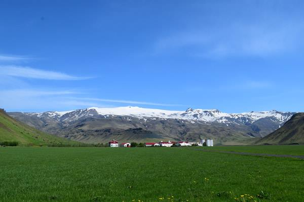

Blog //
Gazing at the Future of the Digital Economy: 3 Big Ideas
There’s a lot of statistics out there on the Internet for digital economy that talks about the number of Internet users in each country.
Those numbers are important because they represent real people and a real market.

Which country has the highest number of users accessing the Internet? Well, it’s a no brainer today. Here are the figures from http://www.internetworldstats.com [1]
-
#By
Population2017
PopulationBy Internet
UsersInternet Users
31 Mar 2017Internet
Penetration -
1China1,388,232,693China731,434,54752.7 %
-
2India1,342,512,706India462,124,98934.4 %
-
3United States326,474,013United States286,942,36287.9 %
-
4Indonesia263,510,146Brazil139,111,18565.9 %
-
5Brazil211,243,220Indonesia132,700,00050.4 %
-
6Pakistan196,744,376Japan118,453,59594.0 %
-
7Nigeria191,835,936Russia104,553,69172.9 %
-
8Bangladesh164,827,718Nigeria93,591,17448.8 %
-
9Russia143,375,006Germany71,727,55189.0 %
-
10Mexico130,222,815Mexico69,915,21953.7 %
Notice the trend? The number of Internet users is obviously dependant on the total population. The anomalies that you see are correcting themselves fast. This post is about the last column in the above table and the power of those percentages.
-
#Country or RegionPenetration (% Population)Internet Users Latest Data
-
1Falkland Islands96.9 %2,841
-
2Iceland96.5 %306,402
-
3Bermuda95.3 %66,557
-
4Norway95.0 %4,892,976
-
5Sweden94.8 %9,216,226
-
6Denmark94.6 %5,270,018
-
7Netherlands94.0 %15,857,959
-
8Andorra94.0 %80,331
-
9Curaçao94.0 %138,774
-
10Japan94.0 %118,453,595
-
11Liechtenstein93.8 %35,000
-
12Luxembourg93.8 %488,286
-
13Niue92.4 %1,100
-
14Finland91.5 %4,821,478
-
15Canada90.9 %31,661,870
-
16Monaco90.7 %27,671
-
17Greenland90.1 %52,000
-
18Faroe Islands90.0 %44,952
-
19Bahrain90.0 %1,182,680
-
20United Kingdom89.8 %57,266,690
The top 20 list has just one country from our table above; Japan. There are 20 countries in the world that have more than 90% of their population online!
Humans think they have the power to only see the present. When you gaze at the stars in the night sky though, you are not looking at the present. The stars that you see through the naked eye are, as they were, between 4 to 1000 years, depending on distance between us and the star, measured in light years.
When you gaze at data, you are looking at the future. Again, like the stars, some of that future is almost upon us, while the rest is so far away in time, that data scientists themselves find it hard to believe their eyes (or intellect to be precise).
Falkland Islands does not have much data to shift through. With 2841 users and high connectivity costs, there are not much use cases that are available. More likely though, we can see it in front of our eyes, but don’t understand it, just like Nostradamus. Perhaps we are taking insights such as these http://www.dailyedge.ie/daniel-o-donnell-falklands-3363974-Apr2017 too lightly. When the complete population of a country is online, census becomes a viable alternative to market research. Here’s an idea of how the above information of Daniel O'Donnell’s popularity in Falkland Islands can be used by the music industry
Democracy 2.0
Let’s move 13,500km to Iceland. The country has always been a sport to try out new ideas. 45km from Reykjavík is the world’s oldest parliament, The Althing. With a spirit to innovate, there’s a lot more exciting and actionable data, which is replicable in other countries. A 25-member council consisting of ordinary residents helped draft a new constitution and worked through sixteen versions in four months based on 16,000 comments from Icelandic citizens using social media platforms such as Facebook, Twitter, and YouTube. Now that’s inclusive democracy or Democracy 2.0! Online voting could be the next big innovation in Iceland. Municipal election voting went online in 2015 here!
(Photo Credit: Shweta Chakravortty / INTERMIND DIGITAL)
Paperless Newspapers
A portal http://www.visir.is followed by a newspaper http://www.mbl.is are the most popular websites in Iceland after Google, Youtube and Facebook [2]. The Guangming Daily is the most popular newspaper website in the world, ranked as the 89th most visited website by Alexa. The New York Times is the most read English language daily online at No.127. Portals are still a lot more popular, with Yahoo! and Tencent QQ ranking among the top 10. In the last decade, the meaning of a “portal” has changed completely. If you can visualise the future from Iceland’s data combined with falling newspaper sales, the meaning of what a “newspaper” is is changing. Newspaper sales have gone down in countries with high internet penetration. In a country like India, newspaper circulation is still increasing, thanks to a low internet penetration of 35%. Among demographics, the youth display a homogeneous global behaviour across high and low internet penetration countries and across the developed and developing world. They almost exclusively catch up with the news on their mobile phones in Iceland, Japan, US, India and throughout the world. If newspapers stop using wood pulp and portals stop directing people to other websites, they lose their individual identities and become one!
Direct Banks
93% of the population use online banking in Iceland. Again this is an easy to predict metric. This percentage is a tad lower than the internet penetration in a country. For example, the figure is 30% in India. Culture, like clouds in a night sky, blurs our time traveling vision. Japan’s internet banking usage is surprisingly low at 20%! Here’s the reason http://blog.strands.com/digital-banking-in-japan Notwithstanding culture shocks, brick and mortar banks need to read the writing on the wall. Direct Banks or Online only banks have been trying to figure out a model for themselves for over two decades now. The time is now ripe. Here’s a list of the top Direct banks in US http://www.toptenreviews.com/money/services/best-online-only-banks Physical brick and mortar banks will have to transform to this model to remain competitive and will operate in a hybrid model in countries with low internet penetration.
Each digital usage statistic from Iceland is a gem, just like every scenery in Iceland is a postcard waiting to be clicked. As more and more countries breach the 90% mark, old business models will keep toppling. Keeping a tab on the data available from the high internet penetration countries can help us predict the future with accuracy.
 (Photo Credit: Shweta Chakravortty / INTERMIND DIGITAL)
[1] a site that competes with Wikipedia.com when it comes to numbers but displays ads
[2] http://www.alexa.com/topsites/countries/IS